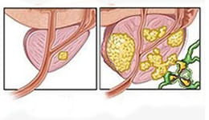

Numărul bărbaților cu probleme de potență a ajuns la cifra record în țara noastră! Metode inovatoare de luptă cu impotența și prostatita în 30 de zile!
Anul 2022 a adus cifra record a bărbaților care suferă de impotență din țara noastră Dovezi teribile și o nouă abordare a acestei probleme odată şi pentru totdeauna!
La Conferința Internațională în Domeniul Urologiei - 19 societatea specialiștilor în domeniul sexologiei au prezentat raportul cu statistici terifiante privind numărul bărbaților care suferă de probleme urologice.
Robert Petrescu, specialist în domeniul sănătății reproductive umane
Principalele subiecte discutate în cadrul conferinței au fost îmbunătățirea diagnosticării, testarea noilor metode și ineficiența metodelor din cadrul clinicilor.
În concluzie, experții în domeniul urologiei au prezentat statisticile din cadrul ultimilor 17 ani de activitate:
- În perioada 2002 - 2022 numărul persoanelor care suferă de afecțiunile sistemului genitourniar a crescut cu 60,5%.
- Cazurile de impotență sexuală masculină au crescut cu 57%.
- Incidența neoplasmelor maligne a crescut cu 180,7%, de trei ori mai mult față de anul 2002.

De ce problema tulburării erectile este importantă pentru țara noastră?
Bărbații nu se adresează la timp la specialiști, ignorând primele semne ale potenței slăbite și prostatitei. Dar boala se dezvoltă în câteva etape.
Etapele dezvoltării impotenței și consecințele acestora
Stadiul 1. Potența dispare ocazional - de exemplu, după consumarea alcoolului sau de la sine. Uneori dispare ”dorința de a face sex”. Majoritatea oamenilor cred că este din cauza muncii grele, a stresului etc. Este acesta însă primul semnal că situația se va înrăutăți.
Stadiul 2. Potența dispare tot mai des. Și chiar dacă există, nu este la fel de tare ca înainte. Penisul se înmoaie în timpul actului sexual sau atunci când se îmbracă prezervativul. De regulă, la această etapă bărbatul își dă seama de existența unei probleme, dar se limitează la administrarea mijloacelor sintetice.
Stadiul 3. Potența apare ocazional. Libidoul scade brusc. Bărbatul devine irascibil, nu mai are putere și dorință să facă ceva. La cuplu apar probleme: certuri, partenera își găsește un amant, situația se poate termina cu divorț.
Stadiul 4. Impotență totală. Produsele pentru mărirea potenței sunt ineficiente. Până la 91% din bărbații ajunși la acest stadiu devin solitari deoarece puține femei acceptă să rămână într-o relație cu un impotent, și dacă totuși acceptă - suferă. Apare depresia și diferite afecțiuni fizice. Principala funcție a organismului uman este cea reproductivă. Odată ce o pierde, persoanaa începe să se îmbătrânească rapid.
80% DINTRE BĂRBAȚI DIN ȚARA NOASTRĂ AU PROBLEME ÎN PAT, iar 63% la vârsta de 40 de ani devin impotenți!
Simptomele aparent nesemnificative din primele etape, duc în cele mai multe cazuri la consecințe fatale:
Impotența
Cancerul de prostată. Cea mai frecventă cauză a decesului (până la 78%) la bărbații care suferă de impotență.

Adenomul de prostată
Pietre la rinichi. Boala renală se dezvoltă din cauza tulburărilor de alimentare cu sânge a organelor pelvine.
«Viața sexuală neregulată reduce speranța de viață și duce la îmbătrânirea prematură.
Prostatita apare în 100% din cazuri, la fiecare bărbat care suferă de impotență și nu are o viață sexuală regulată.»
Cătălin Laurențiu, specialist în domeniul urologiei
VIAGRA* – ucigaș sintetic
*Mijloace sintetice de acțiune temporară fără efect terapeutic
De teamă să nu-și piardă complet potența, bărbații încearcă să găsească o soluție imediat ce apare problema. Dar până nu demult potența nu putea fi restabilită complet deoarece mijloacele existente acționau PE O PERIOADĂ DETERMINATĂ. În același timp, utilizarea frecventă a acestor produse crește de 10 ori riscul producerii unui atac de cord!
La o conferință a fost pus în discuție impactul negativ al produselor sintetice de unică folosință asupra potenței masculine.
Examinarea complicațiilor provocate de stimulentele sintetice pentru potență (foto, operația persoanei cu impotență completă și complicații la inimă cauzate de administrarea mijloacelor sintetice de acțiune temporară fără efect terapeutic )
Cel mai mare pericol îl reprezintă numărul enorm de produse contrafăcute de pe rafturile farmaciilor private. Stimulentele contrafăcute pentru potență constituie 34%-73% din toate stimulentele prezente în farmaciile private ale țării.
Al doilea pericol - utilizarea stimulentelor dăunează sănătății. Stimulentele sintetice au un efect negativ asupra sănătății masculine, în afară de potență acestea afectează ficatul, rinichii și inima. Începând cu anul 2002, perioadă în care diferite generice de Viagra au început să fie vândute în mod liber în țara noastră, incidența infarctului miocardic a crescut cu 26%!
La momentul actual, 15 milioane de bărbați din întreaga lume au devenit dependenți de stimulente, pierzându-și libertatea și sănătatea în goana pentru potență.
Cum să scăpați de toate problemele cu prostatita o dată și pentru totdeauna? Fiecare bărbat trebuie să cunoască aceasta.
În afară de abordarea problemei și prezentarea statisticilor terifiante a fost prezentată soluția acestor probleme. Societatea specialiștilor în domeniul sexologiei au adus la cunoștință raportul privind testele clinice asupra produsului unic pentru recuperarea potenței și eliminarea prostatitei, precum și profilaxia bolilor aparatului genitourinar masculin.
Acesta este renumitul cu o formulă îmbunătățită care în 2022 a trecut testele clinice la scară largă.
Kevin Manole, expert în domeniul sexologiei, specialist în domeniul fitoterapiei
«A fost cea mai dificilă, dar și cea mai necesară dezvoltare»
Formula acestui produs a fost concepută în perioada sovietică, menită să recupereze potența cosmonauților după perioadele lungi petrecute în spațiul cosmic. Savanții au îmbunătățit formula, iar produsul a trecut un timp îndelungat printr-o serie de teste, și după ce a arătat rezultate excelente a apărut în vânzare.
este cel mai puternic produs pentru restabilirea potenței naturale: recuperează, stabilizează și consolidează erecția fără utilizarea stimulentelor de orice gen.
Spre deosebire de suplimentele alimentare și comprimatele sintetice, restabilește potența naturală.

Creșterea penisului în lungime și lățime - la 70% din subiecții studiilor
Practica a demonstrat că stimulează funcția sexuală și contribuie la rezolvarea următoarelor probleme masculine:
- Îmbunătățește circulația sângelui;
- Intensifică percepția senzațiilor în timpul actului sexual, orgasmul devine mai colorat și durează mai mult;
- Crește apetitul sexual și prelungește potența masculină;
- Reduce pauza refractară între erecții, crește volumul și calitatea spermei; crește rezistența corpului;
- Mărește producția de testosteron;
- Facilitează urinarea;
Dovedit: utilizarea produsului duce la restabilirea sănătății masculine. Recuperează potența, influențează asupra erecției; îmbunătățirea circulației sângelui; crește performanța sexuală.
Costul de producție al remediului constituie 298 ron. La moment am reușit să negociem cu Institutul privat de Cercetare-Dezvoltare pentru Nutriție ca să compenseze practic întregul preț pentru cumpărător. Din fericire, specialiștii își dau seama că un astfel de remediu trebuie să fie accesibil pentru toată populația, nu doar unor personae. În schimb, am promis să nu vindem peste hotare formula produsului, fiind disponibil doar pe teritoriul țării noastre.
Institutul nostru în colaborare cu UNIVERSITATEA PRIVATĂ DE MEDICINĂ, Poșta și producătorul în cadrul proiectului de telemedicină (remedii online), au lansat un program de reduceri.
Toți doritorii care vor participa la program pot să primească la preț nou redus până la 149 ron!
Până la epuizarea lotului . Dar stocul produsului se va termina aproximativ în 3-4 săptămâni. Și asta în ciuda faptului că nu există publicitate la TV și radio. Persoanele care s-au recuperat recomandă acest produs prietenilor și rudelor. Chiar și pentru noi a fost o surpriză să aflăm că se va termina atât de rapid. Ultima zi de reduceri pentru - inclusiv.
Comentarii: